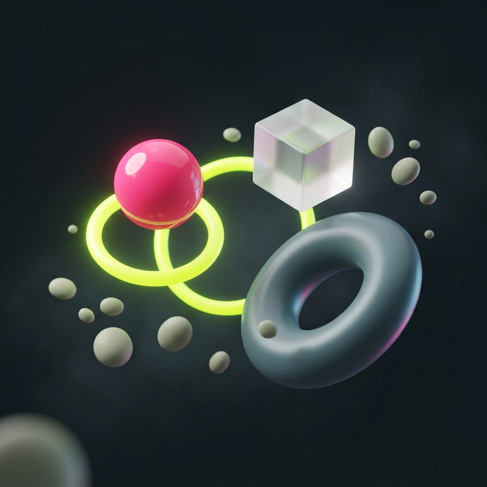
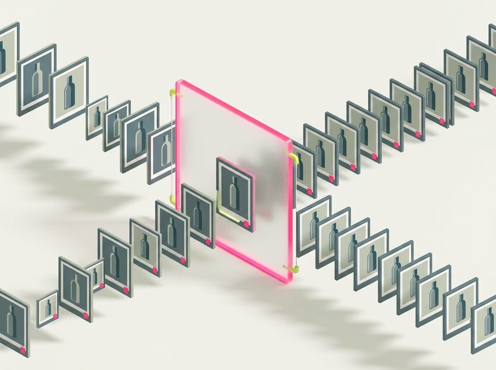
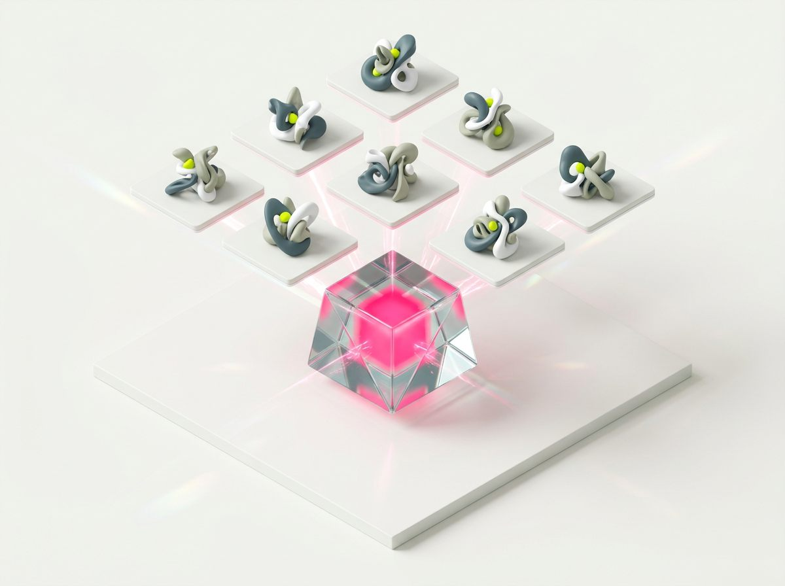
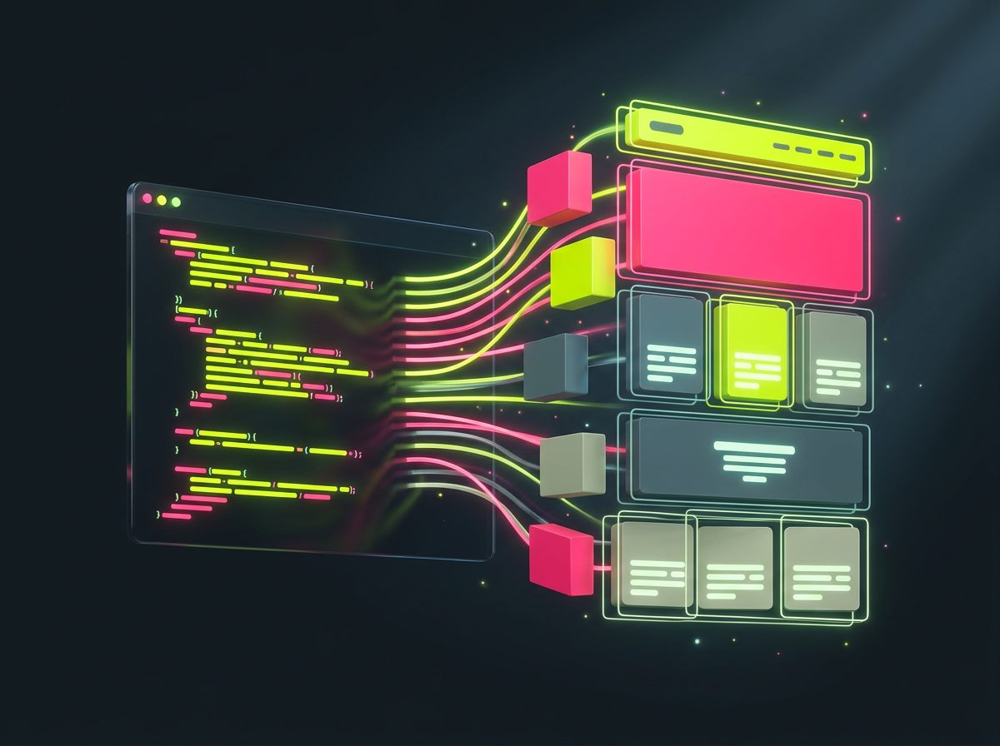
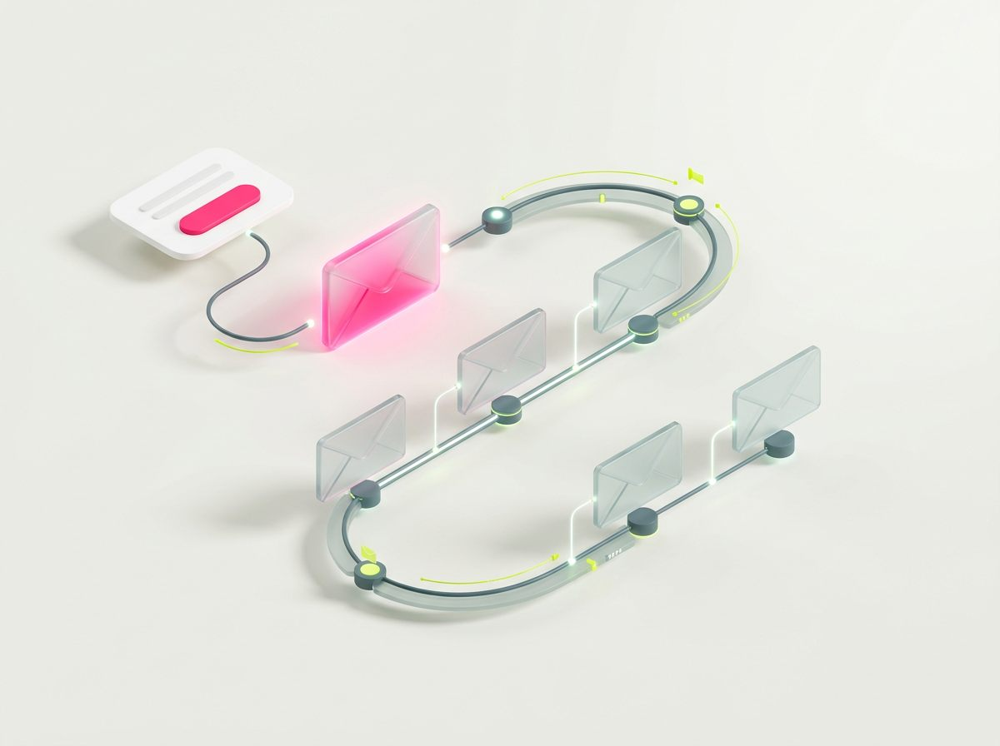
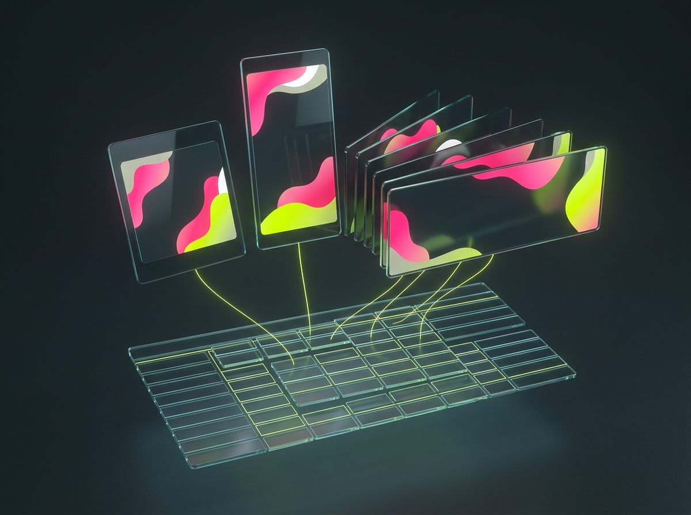

Creative
Automation
Creative Automation leert je hoe je als digitale vormgever repetitief werk automatiseert en AI inzet als creatieve assistent. Je werkt minder met de hand, produceert meer varianten en houdt toch de controle over het design. Doorheen het semester werk je aan een periodeopdracht: een volledige marketingcampagne voor een product, van briefing tot afgewerkte content.
Scroll
Beeldbewerking: acties & batch
Je neemt Photoshop-acties op die een reeks bewerkingen onthouden: resizen, achtergronden uitbreiden met generative fill, een logo plaatsen en exporteren. Met batch-verwerking pas je die actie in één keer toe op een volledige map productfoto's. Zo verwerk je tientallen beelden consistent, zonder ze één voor één te openen.

Content generatie: Weave & Claude Cowork
Je genereert beelden en video met AI-tools zoals Weave, en leert hoe je met goede prompts een consistente stijl bewaakt. Met Claude Cowork laat je AI zelfstandig taken uitvoeren op je eigen bestanden: teksten schrijven, documenten opmaken en content plannen. Je ontdekt waar AI je werk versnelt en waar je zelf moet bijsturen.

Vibe coding & web
Met Claude Code bouw je websites en tools door in gewone taal te beschrijven wat je wil. Je breidt Claude uit met skills, en via de Figma MCP-koppeling laat je Claude ontwerpen genereren in Figma en designs omzetten naar HTML en CSS. Je bouwt zelfs je eigen Figma-plugin. Je websites zet je online met GitHub Pages.

E-mailmarketing & newsletters
In MailerLite bouw je inschrijvingsformulieren die je op een website plaatst, ontwerp je e-mailcampagnes en zet je automatisatieflows op: een nieuwe inschrijver krijgt bijvoorbeeld automatisch een reeks welkomstmails. Zo leer je hoe merken hun publiek opbouwen en blijven bereiken.

Social media: Figma automation
In Figma Buzz bouw je templates voor verschillende formaten, zoals Instagram-posts, stories en display-banners. Via bulk create vul je die templates automatisch met data uit een CSV- of XLSX-bestand: titels, taglines, call-to-actions en afbeeldingen. Eén spreadsheet levert zo een volledige campagne op in alle formaten, met een consistent design.
